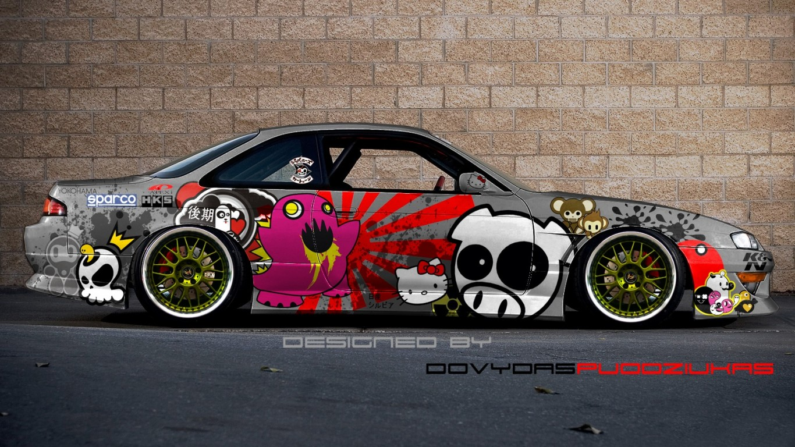

|  | Pásate al mundo japonés, pásate al estilo JDM. El concepto que da al estilo JDM, Japanese Domestic Market (mercado interno japonés) es el término utilizado por las empresas en Japón para referirse al mercado de bienes locales y servicios nacionales, en comparación con el mercado internacional. |